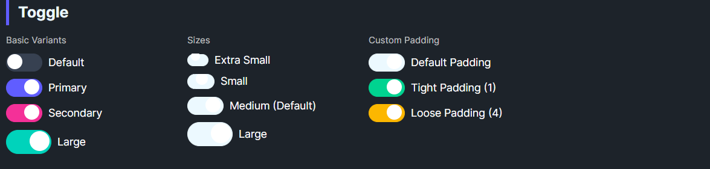

DaisyToggle
Overview

DaisyToggle is a styled ToggleSwitch with 8 color variants and 5 size presets. It offers customizable thumb size via TogglePadding (knob margin) and uses smooth knob animation on state changes. Use it for binary on/off controls.
Variant Options
| Variant |
Description |
| Default |
Neutral track and knob; darkens when checked. |
| Primary / Secondary / Accent |
Colored track when checked. |
| Success / Warning / Info / Error |
Semantic track colors when checked. |
Size Options
| Size |
Track (W×H) |
Knob |
Use Case |
| ExtraSmall |
16×8 |
4px |
Dense layouts, tables. |
| Small |
20×10 |
6px |
Compact forms. |
| Medium (default) |
24×12 |
8px |
General purpose. |
| Large |
28×14 |
10px |
Touch-friendly UIs. |
| ExtraLarge |
32×16 |
12px |
Hero sections or large touch targets. |
Additional Styling
| Property |
Description |
TogglePadding |
Internal knob padding/margin (default 1). Adjust to tweak knob inset. |
Quick Examples
<controls:DaisyToggle Content="Toggle" />
<controls:DaisyToggle Content="Primary" Variant="Primary" IsChecked="True" />
<controls:DaisyToggle Content="Error" Variant="Error" Size="Small" IsChecked="True" />
<controls:DaisyToggle Content="Large Switch" Variant="Accent" Size="Large" />
Tips & Best Practices
- Match
Size to surrounding controls; use Large for mobile or card headers, Small/XS for dense lists.
- Use semantic variants to convey meaning (Success for enabled/ready, Error for risky toggles).
- Keep
TogglePadding small; larger padding may reduce visible track fill on small sizes.
- Bind
IsChecked for state management; it inherits ToggleSwitch behavior.